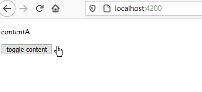
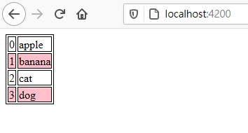
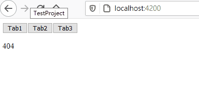
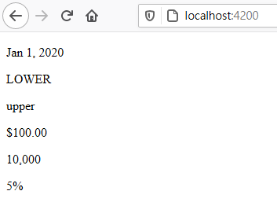
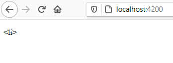
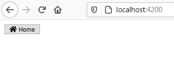
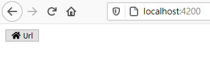
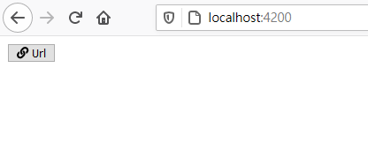
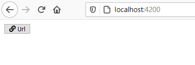

Angular學習筆記5 - 基本結構操作、Pipe、Directive
這次要繼續介紹與 Complnent 相關的各種工具：
- Pipe
- Directive
透過使用這些東西，可以使得 Component 樣板的內容變得更簡潔、好維護
在開始講之前，要先補之前沒有介紹到的一些基本的樣板結構操作
基礎的 Angular 樣板結構操作
Angular 提供了幾種結構性操作，使得撰寫樣板變得更加便利
結構性操作包括：
- ngIf
- ngFor
- ngSwitch
ngIf
使用方式：<tag *ngIf="expression"> ... </tag>
用來決定是否顯示該元素以及其子元素的內容
裡面可以帶入變數，運算式，或常數
首先先準備好決定顯示的變數 visible
export class AppComponent { |
接著來寫樣板
<p *ngIf="!visible"> contentA </p> |
樣板的內容是這樣的，一開始只會顯示 contentA
當點擊了 toggle content 後，會將 visible 的值做反向，此時顯示 contentB
再點擊一次 toggle content 後，再將 visible 反向一次，此時顯示 contentA
來看一下執行畫面：

ngIf 為 false 時，是直接移除該元素
一般的 Javascript 做隱藏，可能會是設定 display:none 來達成隱藏的效果
而 ngIf 則會直接移除整個元素，顯示時再將其加回來
ngFor
使用方式：<tag *ngFor="let item of list;let i=index;let odd=odd; traceBy: func"> ... </tag>
可以遍歷 list 的內容，並將該元素以其子元素逐一輸出
裡面有幾個內容需要先說明清楚：
let item of list
item表示被迭代的元素，list則是陣列let i=index(可選)
取得目前迴圈的索引值let odd=odd(可選)
目前的迭代的索引是否為奇數trackBy: func(可選)
指定用來追蹤物件的依據。通常不太會使用這個選項
簡單來說，就是用來確定清單更新時的變化依據，來決定是否要重新載入 DOM 元素
預設情況，當陣列內的物件不一樣時，會把整個元素都重新載入一次
但可以指定像是名子之類的作為依據，這樣就只會更新有差異的部份，而不是整個 DOM 刪除重新加入
算是可以增加前端顯示效能的功能
使用 ngFor 之前先設定一個字串陣列 list，等等要拿來遍歷用的
export class AppComponent { |
然後是樣版
<style> |
樣板的部份，主要是將陣列的所有字串都印出來，並印出他們的索引值
為了使用 odd，這邊針對索引值為奇數的列，將背景顏色改為粉紅色
執行畫面：

ngSwitch
使用方式：
<tag [ngSwitch]="variable"> |
跟一般程式的 switch 差不多
這邊直接舉例子比較快：
export class AppComponent { |
<button (click)="currentTab='Tab1'">Tab1</button> |
這邊會模擬一個簡單的 Tab 功能
要特別注意的地方是在 *ngSwitchCase 上
*ngSwitchCase 的值是要輸入表達式，而非一般文字
所以當要使用字串作為判斷的依據時，兩旁邊要加上引號
執行畫面：

Pipe
使用方式：value | pipe:arg1:arg2...
Pipe 是一種用來處理資料的工具
比較常見的例子像是格式化時間顯示
Pipe 的參數以冒號 : 做區隔
Pipe 可以透過 | 進行串接
官方提供的基本 Pipe
官方其實已經有提供幾個基本的 Pipe 來使用，像是：
- DatePipe：date
日期格式 - LowerCasePipe：lowercase
小寫顯示 - CurrencyPipe：currency
貨幣表示 - DecimalPipe：number
數字表示 - PercentPipe：percent
百分比表示
詳細用法可以點擊上面的 Pipe 類別名稱前往 Angular 官網查看
Pipe 範例：
<p>{{ '2020-01-01' | date }}</p> |
執行畫面：

自訂 Pipe
Angular 使用者可以自己建立自訂的 Pipe 類別
最簡單的方式就是透過 Angular CLI 的 ng g pipe {pipe-path} 來建立
這邊會透過 Angular CLI 建立一個 Pipe html-tag
ng g pipe html-tag |
建立好的 HtmlTagPipe 如下：
import { Pipe, PipeTransform } from '@angular/core'; |
透過 @Pipe 裝飾器來建立可使用的 Pipe
name 表示在樣板使用時的 Pipe 名稱
由於之前建立專案時，是使用型別嚴格檢查，所以產生的函式參數型別會是 unknown 的型態
接下來會假定傳入數值一定是字串，然後將輸出字串 <value>
修改後的 transform 函式如下：
transform(value: string): string { |
接著使用建立好的 Pipe
<p>{{ 'li' | htmlTag }}</p> |
執行畫面：

Directive
Directive 可以修飾元素本身
Directive 修飾的元素都是透過選擇器來選擇
通常是選擇含有自訂屬性 (attribute) 的元素
(在 CSS Selector 中表示為 [attribute] )
Angular 有提供一些基本的 Directive：
- ngClass
CSS 樣式類別 - ngStyle
CSS 樣式 - Model
對 HTML Form 元素進行雙向綁定時使用
ngIf、ngFor 其實都是 Directive
前面在說明結構性操作時，有提到 ngIf、ngFor 跟 ngSwitch
這些其實全部都是 Directive
他們在官方文件中被歸類為結構指示 (Structural Directive)
Directive 的特例：Component
Component 本身繼承自 Directive
可以說是 Directive 的特例
專門修飾自訂標籤，並輸出樣板內容
Directive 可以做的事情，Component 都可以做
自訂 Directive
簡單的介紹了 Directive 之後，接著來新增自定義的 Directive
本次將會建立一個名為 icon 的 Directive
在開始之前，先透過 npm 安裝 icon 套件 FontAwesome
npm install @fortawesome/fontawesome-free |
接著在 專案資料夾/angular.json 中引入 FontAwesome 的 CSS 檔與 JS 檔
"styles": [ |
接著使用 Angular CLI 建立一個 Directive，指令如下：
ng g directive icon |
建立好的 Directive 會長這個樣子：
import { Directive } from '@angular/core'; |
接著來改寫一下，在建構式引入元素參考
並增加 class fa 和 fa-home
export class IconDirective { |
然後在 AppComponent 的樣板裡套用這個 Directive
<button> |
執行結果：

Input
只有一種 Icon 顯然是不夠的
為了能夠讓使用者自己決定要使用的 Icon，因此要在 Directive 裡新增輸入變數
import { Directive, ElementRef, Input } from '@angular/core'; |
建構式的內容也改成會隨著 iconType 而改變
使用了 Input 之後，就可以在樣板裡再新增一個 iconType 屬性來決定輸出數值
<button> |
執行結果：

嗯…？怎麼沒改變？
原來 Directive 在建構時就已經設定好元素的樣式了
因此即使後來設定 iconType，也沒辦法改變樣式
為了解決這個問題，需要讓 IconDirective 繼承 OnInit 界面
OnInit 介面
OnInit 界面裡只有一個函式 ngOnInit
當一切都設定好，頁面要初始化時，就會呼叫 ngOnInit
因此我們要來改寫原本的 Directive，使其繼承 OnInit 並實做 ngOnInit
import { Directive, ElementRef, Input, OnInit } from '@angular/core'; |
接著看一下執行畫面：

前面寫完 IconDirective 之後，感覺比以往直接賦予 class 還要麻煩，字也更多
每次設定 Icon 時都要出現 appIcon 跟 iconType
要解決這個問題，可以使用 Input 屬性綁定
Input 屬性綁定
從前面的範例中可以發現，Input 本身也是一個裝飾器
而 Input 本身其實可以接受一個參數，也就是要綁定的屬性名稱
在這邊為了要簡化 iconType 跟 appIcon 一定要一起出現的問題
因此對於 iconType 的部份就透過綁定 appIcon 來解決：
('appIcon') iconType = 'home'; |
樣板的內容就可以進行改寫：
<button> |
執行結果：

事實上將 Property 名稱設定為 appIcon，也可以達成一樣的效果
不一定要進行屬性綁定
結語
這次算是補足了之前沒說到的 ngIf、ngFor 等結構指示
雖然是知道 ngIf 跟 ngFor 或是 ngSwitch 這些都是 Directive
但由於其特殊性，讓我不知道該怎麼說明才好
後來看到官方文件上寫的是 Structural Directive
於是前面在不破題的情況下，我就把這些都稱為結構性操作
ngModel 的部份由於涉及雙向綁定
自己本身對這部份不熟，所以沒另外講解
可以參考官方的雙向綁定條目來進一步了解
這次篇幅跟之前比起來有比較長一點
實際上 Directive 還有其他東西可以說明
但是由於篇幅關係，加上有些內容我也不是很熟悉，因此就不另外介紹了
有興趣的可以去找官方文件來深入